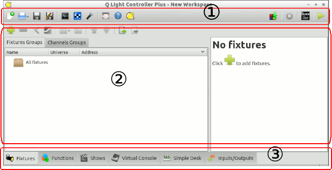

New workspace (CTRL+N)
New workspace (CTRL+N) Open an existing workspace (hold the button longer for a list of recent files) (CTRL+O)
Open an existing workspace (hold the button longer for a list of recent files) (CTRL+O) Save the current workspace (CTRL+S)
Save the current workspace (CTRL+S) Save the current workspace with a new name
Save the current workspace with a new nameThe QLC+ Main Window consists of three main parts:

Most of the controls throughout the software have tooltips, which pop up after holding your mouse cursor over them for a short while.
The menu bar on the top of the workspace window contains the following buttons (from left to right):
New workspace (CTRL+N)
Open an existing workspace (hold the button longer for a list of recent files) (CTRL+O)
Save the current workspace (CTRL+S)
Save the current workspace with a new name
 DMX Monitor (CTRL+M)
DMX Monitor (CTRL+M)
 DMX Address tool
DMX Address tool
 Audio triggers
Audio triggers
 Toggle full screen mode (CTRL+F11)
Toggle full screen mode (CTRL+F11)
 View this documentation (Shift+F1)
View this documentation (Shift+F1)
 View information about QLC+
View information about QLC+
 DMX Dump (CTRL+D)
DMX Dump (CTRL+D)
 Live Edit: allows you to modify a function while QLC+ is in Operate Mode
Live Edit: allows you to modify a function while QLC+ is in Operate Mode
 Live Edit Virtual Console: allows you to modify the Virtual Console while QLC+ is in Operate Mode. Click to Toggle
Live Edit Virtual Console: allows you to modify the Virtual Console while QLC+ is in Operate Mode. Click to Toggle
 Stop All Functions (CTRL+Shift+ESC)
Stop All Functions (CTRL+Shift+ESC)
 Toggle Blackout
Toggle Blackout
 Switch between Design Mode and Operate Mode (CTRL+F12)
Switch between Design Mode and Operate Mode (CTRL+F12)
At the bottom of main window you can find easy eye catching icons for switching between
QLC+ contexts.
By double clicking on a tab, a context can be detached on a separate window.
To reattach a detached context, just close the window.
QLC+ contexts appear in the following order (from left to right):
 View the Fixture Manager
View the Fixture Manager
 View the Function Manager
View the Function Manager
 View the Show Manager
View the Show Manager
 View the Virtual Console
View the Virtual Console
 View the Simple Desk
View the Simple Desk
 View the Input/Output configuration manager
View the Input/Output configuration manager